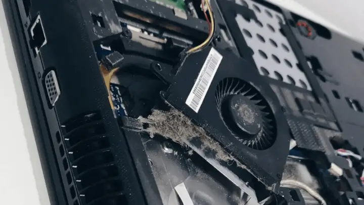
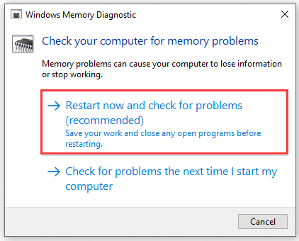

FAN NOISE TROUBLESHOOT
Excessive fan noise can be annoying and indicate a potential issue with your laptop or PC. Below are some troubleshooting steps to help you reduce or resolve fan noise.
Follow these steps to troubleshoot excessive fan noise:
- 1. Check for Blocked Vents
Clear any obstructions: Ensure the laptop or PC's vents are not blocked by dust, debris, or surfaces like bed sheets or carpets.
Place the device on a hard, flat surface for better ventilation.  - 2. Clean the Fans
Dust accumulation: Dust buildup inside the fans can cause them to work harder, leading to louder noise.
Use compressed air to clean the fans and vents carefully.
- 3. Update BIOS and Drivers
Update system drivers: Make sure all system drivers, especially for the chipset and graphics card, are up to date.
Update BIOS: Manufacturers often release BIOS updates that help optimize fan speed and performance.
- 4. Use Cooling Pads or Stands
Improve airflow: Using a laptop cooling pad or stand can significantly reduce internal temperatures, allowing the fans to work less and be quieter.
This is especially helpful for laptops prone to overheating.
- 5. Adjust Power Settings
Reduce system load: Adjust your power settings to “Balanced” or “Power Saver” mode to decrease the workload on your processor and GPU.
This reduces the amount of heat generated, minimizing the need for fans to run at high speeds.
- 6. Close Unnecessary Programs
Limit running tasks: Running too many applications simultaneously can cause your system to overheat, making the fans work harder.
Close any unnecessary background programs and check the task manager to monitor CPU and GPU usage.
- 7. Check for Hardware Issues
Faulty fan: In some cases, a malfunctioning fan might be the cause of excessive noise.
If the problem persists, consider replacing the fan or consulting a technician to inspect your hardware. 
By following these steps, you can significantly reduce the noise generated by your device's fans. If the issue continues, it may be best to consult professional support or consider hardware replacement.